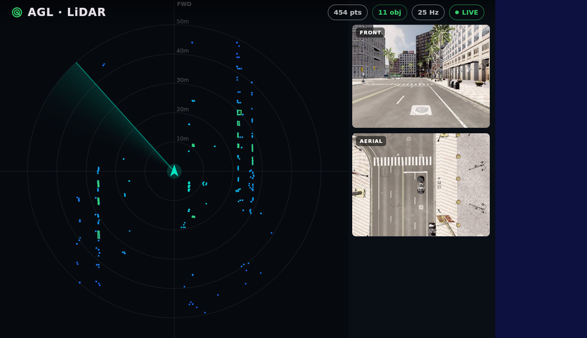

Last week this was the one milestone still ahead: computing the detections on the target instead of replaying them. This week it works. The perception node now runs inside the AGL image, reads the raw LiDAR, and draws the boxes itself, in real time.
MILESTONE The "ROS-embedded" step is done. A PCL perception node is now packaged into the AGL image and starts on boot. The demo no longer replays pre-recorded boxes: it plays back only the raw sensor streams, and the node on the device turns the point cloud into detections live at around 30 Hz. The dashboard you see is drawing boxes that were computed on the target a few milliseconds earlier.
Up to now the demo was an honest shortcut. The recorded clip carried the LiDAR cloud, the two camera feeds, and the detection boxes, all pre-computed, so the dashboard had something to draw without any perception running on the board. That proved the HMI and the transport, but not the part the project is actually about: perception running on the embedded target.
That gap is now closed. The pipeline on the device looks like this:
The bag no longer provides /carla/detections at all. That topic is now produced on the board by the perception node, from the same point cloud the radar view draws.
Here is the HMI inside a built AGL image, running on the emulated target. The point cloud is in blue, and the green boxes over it are the live detections. The chips read 454 points in the frame, 11 objects found this tick, a 25 Hz view, and a live link.

A screenshot of boxes looks the same whether they were replayed or computed on the spot, so the real test is to ask the running system who is publishing them. On the booted image, with the bag playing only the raw streams, the answer is the node, not the recording:
# who is publishing the detections?
$ ros2 topic info /carla/detections --verbose
Type: vision_msgs/msg/Detection3DArray
Publisher count: 1
Node name: lidar_detector # the on-device node, not the bag
# and the marker topic only exists because the node is running
$ ros2 topic hz /carla/detections
average rate: 30.8
$ ros2 topic hz /carla/lidar
average rate: 28.0Two things confirm it. The publisher of /carla/detections is the lidar_detector node, and the /carla/detections_markers topic exists at all, which it never did in the recording. The boxes are being made on the target.
The point of doing this inside AGL, rather than in a loose script, is that it builds and installs the same way every other component does. Three pieces make it work:
Detection3DArray boxes plus a marker array for visualization.DEMO_MODE=replay switch keeps the old pure-replay path for any image built without the perception package, so the demo still degrades gracefully.The result is that an image built with the perception package in it boots straight into live, on-device detection, with no manual steps and no shell.
Status: on-target perception is verified in a built AGL image on the emulated target. The detector runs on boot and the HMI draws its live output.
The headline is simple: perception is no longer something the recording did earlier, it is something the device does now.